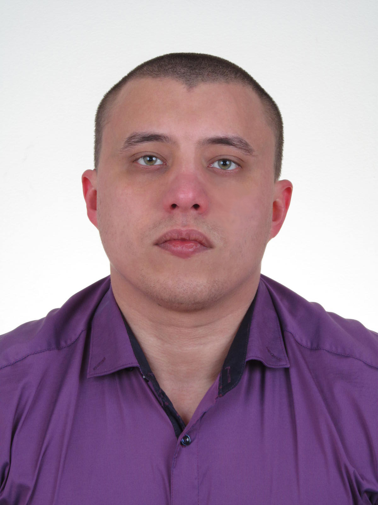

Pavust Dmitry
Education
: 2013- ... Academy "Step", specialty - programmer . 2009 - 2010 Driving acquired category - "B". 2008 - 2014 Zaporizhzhya National Technical University, specialty - management system electric engine 2003 - 2007 Zaporozhye Metallurgical College, specialty - repair electrician metallurgical equipment.

Objective:
obtaining positions Front-end developerDate of Birth:
February 5, 1988, age 27 years.Address:
ZaporozhyePhone:
(099) 240-32-19E-mail:
dimapavust@gmail.comExperience:
2008 . - ... " Zaporizhstal " specialtyelectrician on repair of metallurgical equipment .